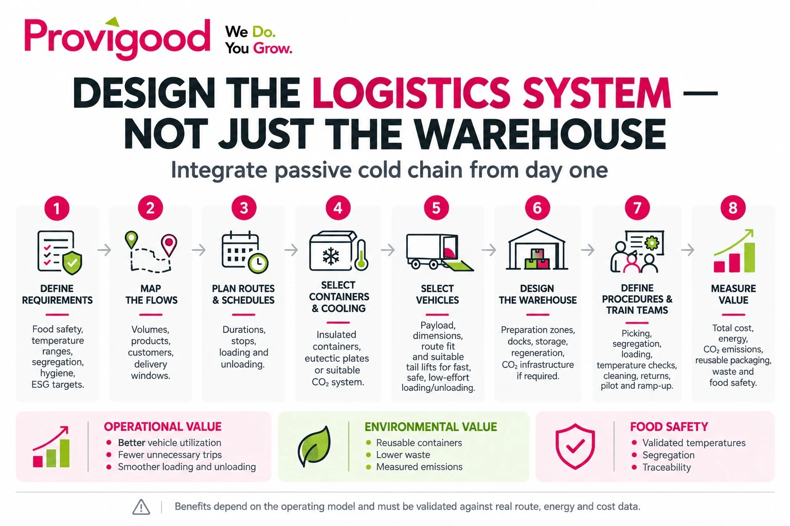

L'intérêt économique du froid passif dès la conception.
Principe fondamental : concevoir l'ensemble du système logistique, et pas seulement l'entrepôt. La sécurité alimentaire, les flux logistiques, les équipements frigorifiques, les contenants, les véhicules, les tournées, les procédures et les objectifs ESG doivent être envisagés dans leur ensemble.
1. Concevoir le système logistique avant l'entrepôt
Lors de la planification d'une nouvelle plateforme logistique accueillant des produits surgelés, frais et à température ambiante, le projet doit partir des exigences de sécurité alimentaire, des flux logistiques et des objectifs environnementaux, et non du bâtiment lui-même.
L'aménagement de l'entrepôt, les installations frigorifiques, les conteneurs isothermes, les véhicules, les tournées de livraison et les procédures opérationnelles doivent être conçus comme les éléments d'un même système. Une planification en amont permet d'éviter les investissements superflus et d'identifier les leviers d'amélioration de la productivité, du taux d'utilisation des véhicules et de la performance environnementale.
2. Définir en amont les objectifs de sécurité alimentaire et les critères ESG
Avant de choisir les équipements, il convient de définir les températures requises, les durées maximales de tolérance aux écarts de température, les règles de séparation des produits incompatibles, ainsi que les exigences d'hygiène, de nettoyage et de traçabilité. Les produits crus, les produits cuits et les autres denrées incompatibles doivent être séparés selon des procédures rigoureuses, à toutes les étapes du stockage, de la préparation des commandes et du transport.
La loi vietnamienne n° 55/2010/QH12 relative à la sécurité alimentaire, notamment ses articles 20 et 21, constitue un cadre juridique de référence pour la conservation et le transport des denrées. L'article 20 encadre les conditions de stockage, notamment la séparation des différentes catégories de denrées, tandis que l'article 21 définit les conditions de transport et de préservation des aliments. Les réglementations et normes techniques propres aux produits concernés doivent également être prises en compte.
Référence: Portail officiel du Gouvernement vietnamien, loi n° 55/2010/QH12 relative à la sécurité alimentaire.
Il convient également de fixer des objectifs mesurables en matière de consommation énergétique, d'émissions de gaz à effet de serre (GES), d'utilisation d'emballages réutilisables, de réduction des déchets plastiques et de prévention du gaspillage alimentaire. Les textes de référence comprennent la loi n° 72/2020/QH14 relative à la protection de l'environnement, notamment son article 142 consacré à l'économie circulaire, ainsi que les textes encadrant l'efficacité énergétique : la loi n° 77/2025/QH15, entrée en vigueur le 1er janvier 2026, et le décret n° 30/2026/ND-CP, entré en vigueur le 21 janvier 2026.
Référence: Loi n° 72/2020/QH14 relative à la protection de l'environnement.
Référence: Loi n° 77/2025/QH15 relative à l'efficacité énergétique (loi modifiée).
Référence: Décret n° 30/2026/ND-CP portant mise en œuvre de la loi sur l'efficacité énergétique.
En matière d'émissions de gaz à effet de serre, le décret n° 06/2022/ND-CP a été modifié, notamment par les décrets n° 119/2025/ND-CP et n° 83/2026/ND-CP. Il convient d'évaluer les obligations d'inventaire, de reporting et de réduction des émissions applicables à l'exploitant et au site concernés.
Référence: Décret n° 83/2026/ND-CP, modifications des règles relatives aux gaz à effet de serre et à la couche d'ozone.
3. Coordonner les flux, les tournées, les contenants et les systèmes de froid
La première étape consiste à cartographier les volumes de marchandises, à localiser les clients et à recenser les principales contraintes opérationnelles : calendriers de livraison, durée des tournées, temps de chargement et de déchargement, pics d'activité et retours des contenants. Il faut également prévoir le temps et l'espace nécessaires à la régénération des sources de froid, ainsi qu'au retour, au nettoyage et à l'inspection des emballages réutilisables.
Le choix des conteneurs et des sources de froid doit tenir compte des températures requises, des charges utiles, de l'autonomie thermique et des contraintes liées à la régénération. Les conteneurs isothermes réutilisables équipés de plaques eutectiques peuvent convenir aux tournées courtes ou à température unique. Certaines solutions Olivo de la gamme BOX offrent une autonomie pouvant atteindre 12 heures, tandis que certaines références des gammes BAC et ROLL permettent de maintenir la température jusqu'à 72 heures, selon leur configuration et les conditions d'exploitation.
Pour les applications adaptées, le SIBER SYSTEM® peut également être envisagé. Son intégration nécessite alors de prévoir l'approvisionnement en CO₂ liquide, les installations techniques et les consignes de sécurité correspondantes. Le dimensionnement de l'installation doit faire l'objet d'une étude réalisée par des ingénieurs et des spécialistes de la sécurité. L'installation d'une cuve extérieure de CO₂ n'est toutefois pas indispensable à toutes les solutions de froid passif.
Référence: Olivo, plaques eutectiques ou SIBER SYSTEM® : quelle source de froid choisir ?.
Les véhicules doivent être choisis en fonction des contenants à transporter et des contraintes des tournées, notamment en matière de dimensions et de charge utile. Lorsque les conditions de livraison le nécessitent, il est préférable de les équiper de hayons élévateurs afin de sécuriser les opérations de manutention, de les accélérer et de réduire leur pénibilité. Cet équipement est particulièrement utile lorsque les sites de livraison ne disposent ni de quais adaptés ni de matériel de manutention.
Les recherches soulignent également l'intérêt de coordonner la préparation des commandes en entrepôt et l'optimisation des tournées, plutôt que de gérer ces opérations séparément. L'étude de Rijal, Bijvank et De Koster (2023) modélise conjointement la constitution des vagues de commandes (batching), la planification des préparateurs, le stockage temporaire des commandes (staging) et le chargement des véhicules. Dans deux études de cas menées auprès d'enseignes de la grande distribution, cette planification intégrée a permis de réduire les coûts d'environ 9 % et 11 %. Ces résultats sont propres aux cas étudiés et ne constituent pas une garantie de gains pour tout nouveau projet.
4. Concevoir l'entrepôt en fonction du modèle opérationnel retenu
L'aménagement de l'entrepôt doit tenir compte de l'ensemble des opérations : préparation des commandes, séparation des produits, consolidation, stockage des contenants, régénération des sources de froid, quais de chargement, zones de lavage et gestion des retours.
Les technologies retenues peuvent avoir des conséquences directes sur les capacités de congélation, les équipements frigorifiques, les besoins énergétiques et les infrastructures nécessaires à l'utilisation du CO₂. Ces paramètres doivent être définis avant la finalisation des plans architecturaux et techniques.
L'enjeu consiste à déterminer la combinaison la plus adaptée entre réfrigération active et froid passif pour chaque flux, sans supposer que le froid passif peut remplacer intégralement le froid mécanique. Toute réduction des surfaces ou des équipements frigorifiques doit s'appuyer sur une étude opérationnelle et financière documentée.
5. Formaliser les procédures et former les équipes
Des procédures écrites doivent encadrer la préparation des conteneurs, l'installation des sources de froid, les contrôles de température, la séparation des marchandises, la préparation des commandes (picking), le chargement, le déchargement, le nettoyage, la maintenance, les retours et le traitement des anomalies. Les plans de chargement doivent tenir compte de la configuration du véhicule, de l'arrimage des marchandises, de l'ordre des livraisons et, le cas échéant, de l'utilisation des hayons élévateurs.
Les équipes d'entrepôt, les conducteurs, les superviseurs et les services qualité doivent bénéficier d'une formation pratique. La mise en œuvre doit prévoir des livraisons tests, suivies d'une augmentation progressive de l'activité. Le nouveau modèle doit être validé avant sa généralisation, en laissant aux collaborateurs le temps nécessaire pour se familiariser avec les équipements et s'approprier les procédures.
Même techniquement performante, une solution peut produire de mauvais résultats si les équipes ne sont pas suffisamment formées ou si les processus ne sont pas adaptés aux contraintes réelles du site et des livraisons.
6. Évaluer les gains économiques et environnementaux
L'analyse de rentabilité doit distinguer les économies directes des gains liés à l'amélioration globale des opérations. Le scénario ci-dessous estime les économies brutes de carburant du groupe frigorifique pour une flotte hypothétique de 10 camions. Les données sont indicatives et ne constituent pas une prévision pour un client donné.
| Hypothèses et résultats | Scénario conservateur | Scénario central | Potentiel élevé |
|---|---|---|---|
| Nombre de camions | 10 | 10 | 10 |
| Tournées par camion et par jour | 2 | 2 | 2 |
| Jours d'exploitation par an | 300 | 300 | 300 |
| Nombre total de tournées annuelles | 6 000 | 6 000 | 6 000 |
| Tournées potentiellement adaptées au froid passif | 3 000 | 3 000 | 3 000 |
| Heures de réfrigération évitées par tournée concernée | 1 | 2 | 3 |
| Économies annuelles de gazole | 9 000 L | 18 000 L | 27 000 L |
| Économies brutes de carburant du groupe frigorifique | 262 millions VND | 524 millions VND | 786 millions VND |
| Émissions directes de CO₂ évitées (estimation indicative) | 24,4 t | 48,8 t | 73,1 t |
Hypothèses de calcul : consommation de 3 litres de gazole par heure de fonctionnement du groupe frigorifique ; 3 000 tournées annuelles adaptées au froid passif ; prix du gazole de 29 128 VND par litre, selon le cours officiel du marché vietnamien au 8 octobre 2026. Les émissions évitées sont estimées à partir d'un facteur indicatif de 2,709 kg de CO₂ par litre de gazole.
Ces montants correspondent exclusivement aux économies brutes de carburant du groupe frigorifique. Ils ne tiennent pas compte des coûts de régénération des plaques eutectiques, d'électricité, des conteneurs, des consommables, des infrastructures, de la maintenance, du financement et du déploiement. Ils excluent également les gains éventuels liés à l'optimisation des tournées, à la réduction du parc de véhicules, à la main-d'œuvre, à la diminution des pertes de produits ou à la suppression des emballages jetables. L'estimation centrale de 524 millions de VND ne constitue donc ni une estimation des gains nets ni une prévision de retour sur investissement (ROI).
Une étude expérimentale consacrée à un conteneur passif intégrant un matériau à changement de phase (MCP, ou phase change material, PCM), destiné au transport combiné route-rail, a montré qu'il était possible de maintenir une température intérieure comprise entre 2 °C et 8 °C pendant 94,6 heures au maximum. Par rapport à un conteneur frigorifique autonome fonctionnant au gazole, testé dans le cadre de la même étude, la consommation d'énergie était inférieure de 86,7 %, les coûts d'exploitation de 91,6 % et les émissions de 78,5 %. Bien que ces résultats témoignent du potentiel technique de la solution, ils ne peuvent être directement transposés à une flotte de distribution urbaine ni être considérés comme des économies garanties.
D'autres gains peuvent résulter d'une meilleure utilisation des véhicules, de la suppression des trajets inutiles, d'opérations de quai plus fluides, du recours aux emballages réutilisables, de la réduction des déchets et d'une meilleure maîtrise des températures. Ces avantages doivent être quantifiés à partir des données opérationnelles propres à chaque client. L'évaluation environnementale doit également intégrer la régénération des sources de froid, la logistique inverse (retour des contenants), le nettoyage, la durée de vie des contenants et leur traitement en fin de vie.
7. Évaluer le potentiel de l'économie circulaire
L'article 142 de la loi vietnamienne n° 72/2020/QH14 relative à la protection de l'environnement définit le modèle d'économie circulaire autour de plusieurs principes : réduire l'utilisation des matières premières, prolonger la durée de vie des produits, limiter les déchets et réduire les impacts environnementaux négatifs. Il prévoit également que la gestion des ressources et des déchets, le réemploi et le recyclage soient pris en compte dès la conception des projets et des produits.
Référence: Loi n° 72/2020/QH14, article 142, économie circulaire.
Le décret n° 08/2022/ND-CP et ses textes modificatifs encadrent la gestion environnementale ainsi que les restrictions applicables aux plastiques à usage unique. La décision n° 21/2025/QĐ-TTg définit, quant à elle, les critères environnementaux et la procédure de validation des projets d'investissement pouvant bénéficier d'une classification verte au Vietnam. Elle est entrée en vigueur le 22 août 2025.
Référence: Décision n° 21/2025/QĐ-TTg, critères applicables aux projets d'investissement verts.
Publiée le 17 septembre 2026, la décision n° 46/2026/QĐ-TTg entrera en vigueur le 1er novembre 2026. Elle précise les modalités d'identification des projets verts et des projets répondant aux critères de l'économie circulaire, ainsi que l'application d'un cadre environnemental, social et de gouvernance (ESG). Bien qu'elle ne soit pas encore en vigueur au 9 octobre 2026, ses critères peuvent être pris en compte dès la phase préparatoire du projet.
Référence: Décision n° 46/2026/QĐ-TTg, Journal officiel et date d'entrée en vigueur.
Une plateforme logistique reposant sur des contenants durables et réutilisables, limitant le recours aux emballages jetables et mesurant sa consommation énergétique ainsi que ses émissions, contribue aux objectifs de l'économie circulaire. Toutefois, l'utilisation d'une technologie de froid passif ne suffit pas, à elle seule, à obtenir une reconnaissance officielle en tant que projet vert ou circulaire.
Le projet doit définir des indicateurs de référence et des objectifs concernant la rotation des contenants, les emballages évités, la consommation énergétique, les émissions et les déchets. Les critères applicables doivent ensuite être évalués avec des experts juridiques et environnementaux vietnamiens qualifiés. Toute revendication d'éligibilité à un financement vert ou toute demande de labellisation officielle doit intervenir uniquement après évaluation des critères correspondants.
8. Adopter une démarche de conception intégrée

La conception d'une plateforme logistique multi-températures repose sur huit étapes complémentaires :
- Définir les objectifs en matière de sécurité alimentaire, d'exploitation, d'ESG et de réglementation.
- Cartographier les flux de marchandises, les tournées, les calendriers de livraison et les retours de contenants.
- Sélectionner les conteneurs, les sources de froid et les systèmes de régénération.
- Choisir les véhicules en fonction des charges à transporter et déterminer les besoins en hayons élévateurs.
- Concevoir l'entrepôt, les installations techniques, les zones de préparation et les quais de chargement.
- Formaliser les procédures de préparation, de séparation des produits, de chargement, de déchargement, de nettoyage et de gestion des retours.
- Former les équipes, mener des essais pilotes et valider les performances.
- Évaluer le coût total, la qualité de service, la consommation énergétique, les émissions, les déchets et le taux de réemploi des contenants.
Ces étapes doivent être coordonnées et ajustées au fur et à mesure de l'avancement du projet, avant la décision finale d'investissement. La démarche est itérative et transversale : les hypothèses relatives aux tournées peuvent modifier le choix des conteneurs, le choix des véhicules peut influer sur l'aménagement des quais, et les résultats des essais peuvent conduire à adapter les procédures ou les infrastructures.
Conclusion : concevoir le système logistique, pas seulement l'entrepôt
Les solutions de froid passif créent de la valeur économique et environnementale lorsqu'elles sont intégrées au modèle logistique dès la conception du projet. Leur intérêt dépasse largement les économies de carburant du groupe frigorifique : elles peuvent également contribuer à une meilleure utilisation des véhicules, à des opérations d'entrepôt plus efficaces, au développement des emballages réutilisables, à une meilleure maîtrise sanitaire et à l'atteinte d'objectifs ESG mesurables.
La valeur réelle de ces solutions doit être évaluée à l'aide d'un modèle de coût total de possession (Total Cost of Ownership, ou TCO) adapté à chaque client, fondé sur des données opérationnelles réelles et une comparaison de plusieurs scénarios complets. Les résultats publiés dans d'autres contextes témoignent d'un potentiel technique, mais ne remplacent pas une étude de rentabilité propre au site concerné.
Définir les exigences. Planifier les tournées. Choisir les conteneurs, les systèmes de froid, les véhicules et les hayons. Formaliser les procédures. Former les équipes. Finaliser ensuite la conception de l'entrepôt.
Provigood et Olivo accompagnent les opérateurs dans la traduction de ces principes en un plan d'investissement chiffré, fondé sur des hypothèses opérationnelles claires, des objectifs environnementaux mesurables et un plan de déploiement réaliste.
Provigood — We Do. You Grow. Distributeur agréé d'Olivo Cold Logistics au Vietnam et au Cambodge.